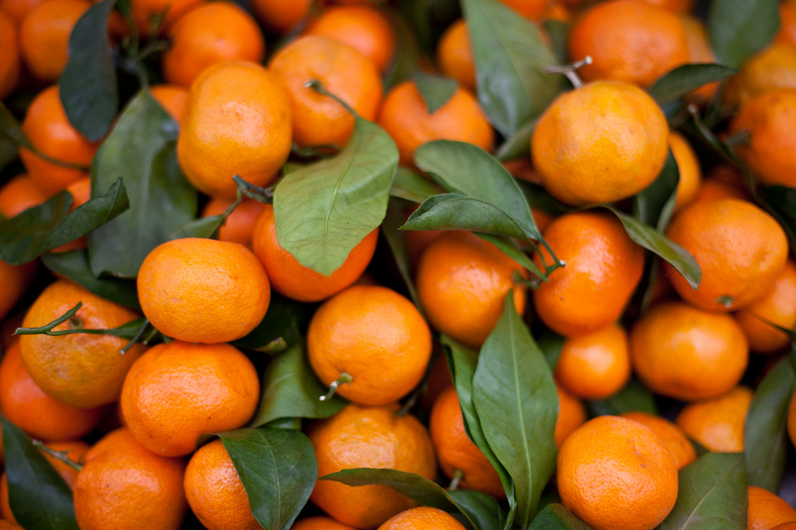
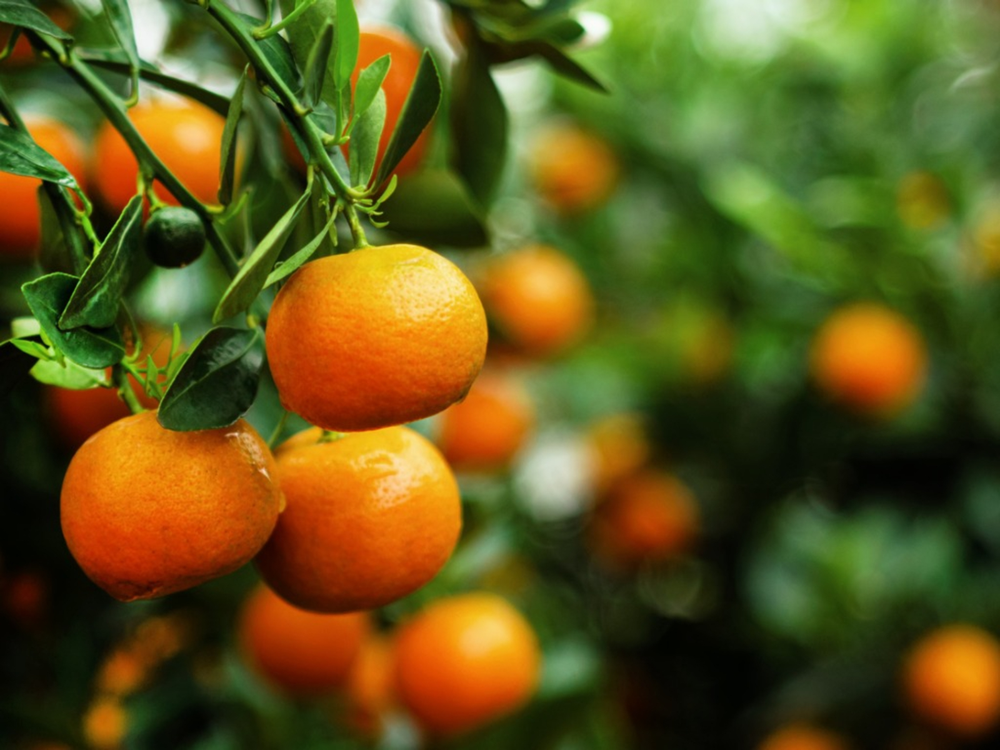
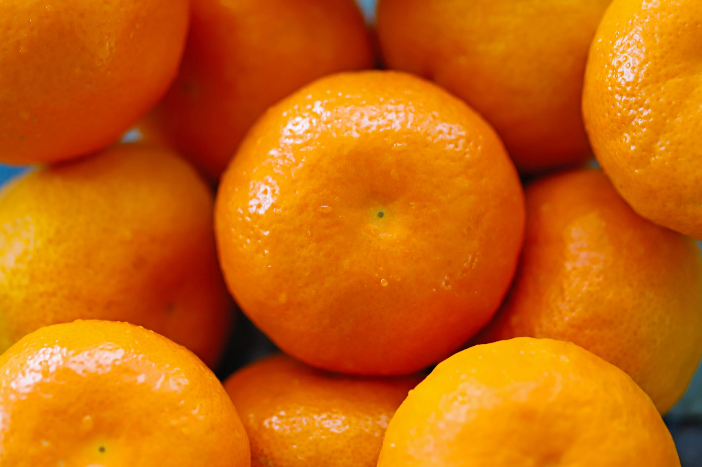
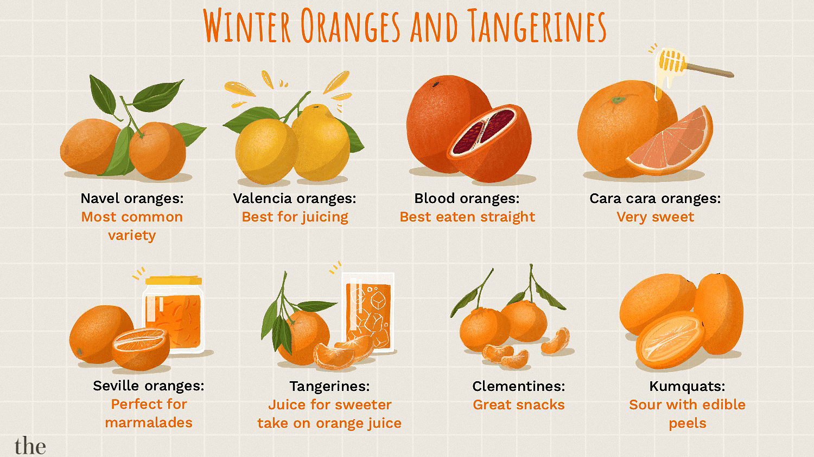
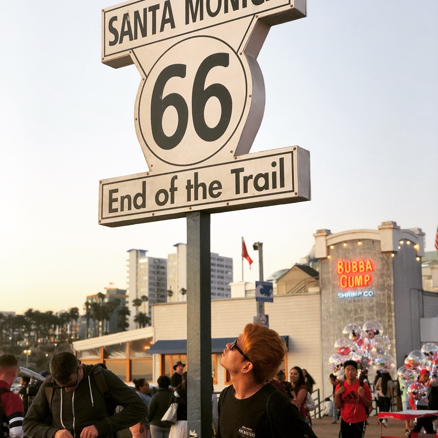

MUSIC
2017年にリリースされたシングル“Tangerine”が Pitchfork、NPRなどの大手音楽メディアに高く評価され、アジア各国でも店舗が展開されるフランスのファッションブランドMAISON KITSUNÉの音楽レーベルKitsuné Musiqueのプレイリストでピックアップされたことでも話題となった。2018年にリリースされた“Tangerine (Channel Tres Remix)”がiPhone 11のCMに起用されたことで一躍その名前が世界中に知れ渡り、Spotifyでも現在300万回以上の再生回数を記録している。
PHOTOS
  ITEMS


PROFILE

HIROYA KABASAWA
埼玉県出身 23歳
"Tangerine - CHANNELTRES REMIX" を聞いて
なんとなくTangerineの響きが良かったので作りました。